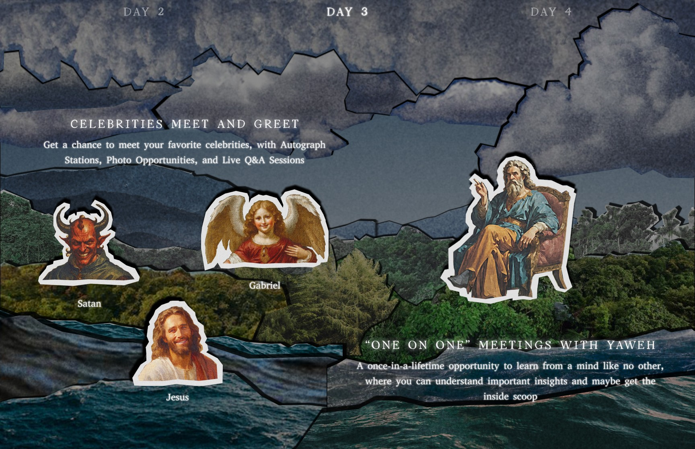
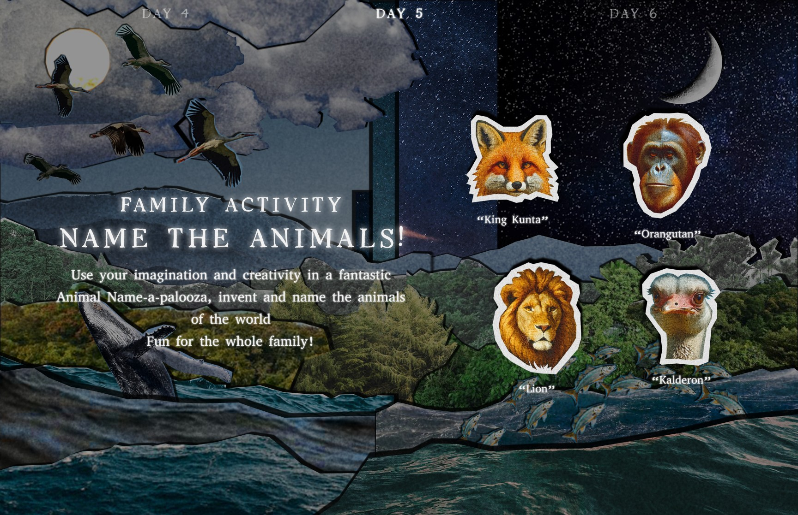
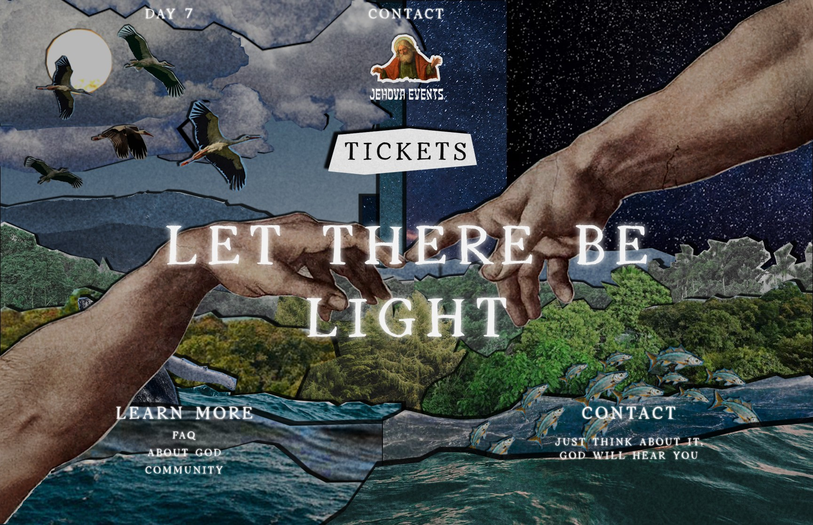
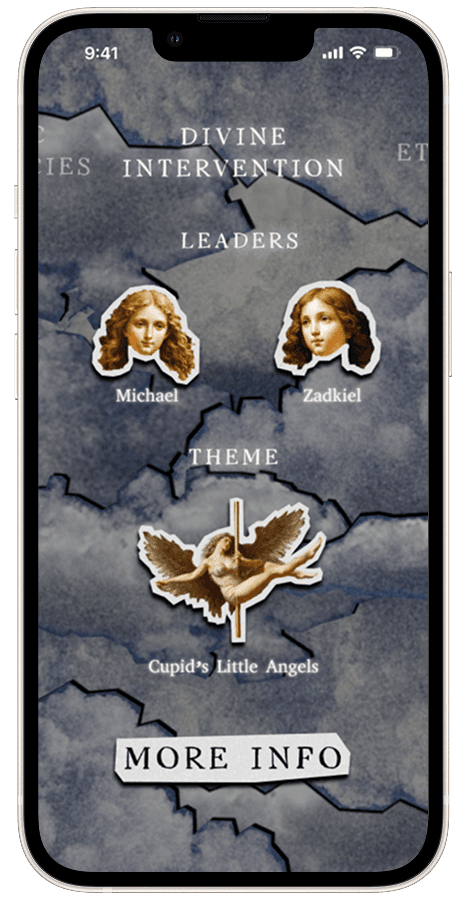
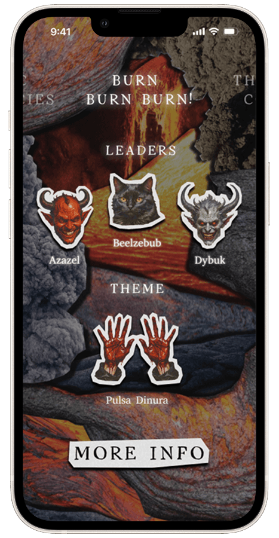
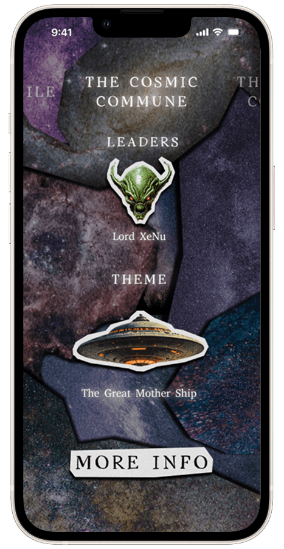
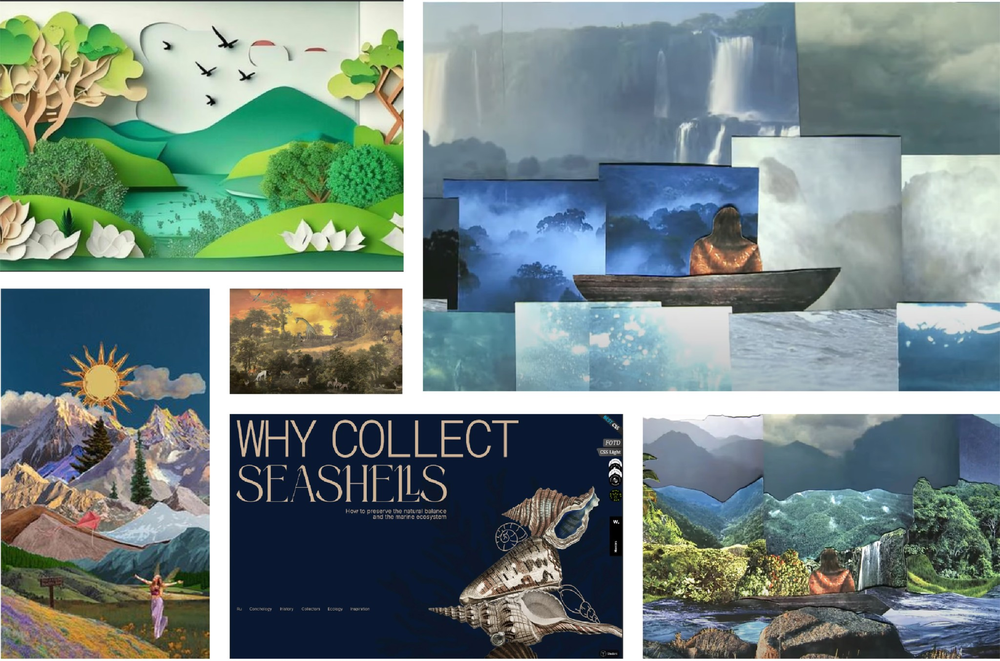

“Let There Be Light” Festival
A landing page for a week-long festival inspired by the Jewish creation story, designed as a student project.
Developed as a school project guided by Lior Gez.
Landing Page
[Placeholder] A paragraph on the landing page: one screen per day of creation, the paper-cutout world, and how visitors move through the week.



[Placeholder] A paragraph on the motion between days.
Companion App
[Placeholder] A paragraph on the companion app: the camps, the schedule, and how it extends the landing page onto the phone.



Design & Mechanics
The backgrounds are digital cutouts of terrain photographs, with added grain and drop shadow effects to simulate a paper-like texture.

The foreground figures are AI-generated, Renaissance-style drawings composited within a paper border to stand out from the background.

[Placeholder] A paragraph on how the layers stack and move against each other.
Design Process
[Placeholder] A paragraph on the references: Renaissance painting, paper theatre, and the early concepts that led to the final direction.
